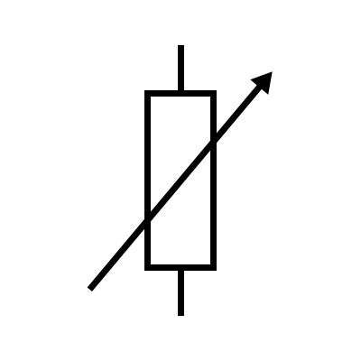
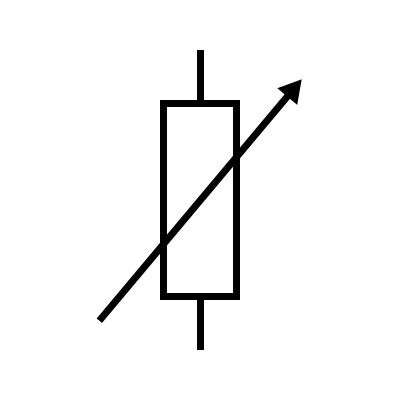

Радиолюбителски клас 2
Раздел 1 – Електротехника и радиотехника
Актуализиран конспект 18.02.2019 г.
Loading data - please wait...
{{questions[page].number}}. {{ questions[page].question }}
Отговори
| Номер | Правилен | Отговорено |
|---|---|---|
| {{ q.number }} | {{ q.correct }} | {{ answers[i] || '-' }} |
| Резултат: | {{ questions.reduce((sum, item, i) => { return sum + Number(item.correct === answers[i]) }, 0) }}/{{ questions.length }} | |
 
